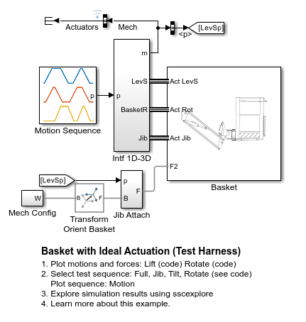
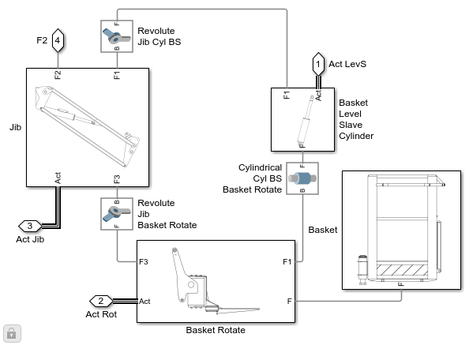
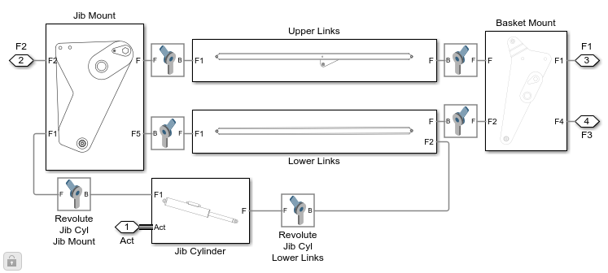
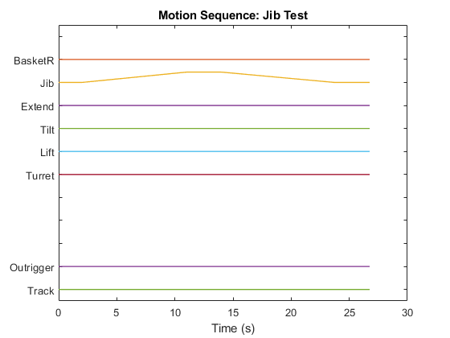
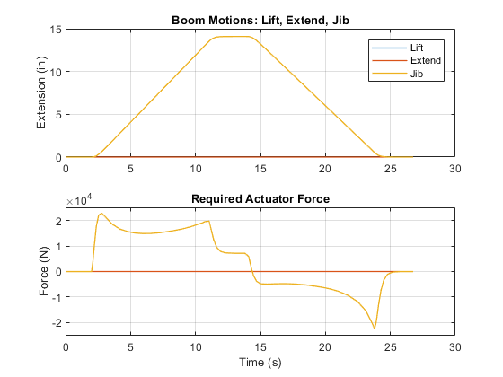
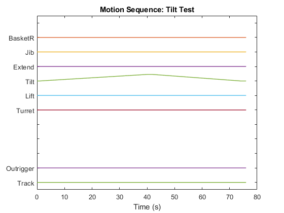
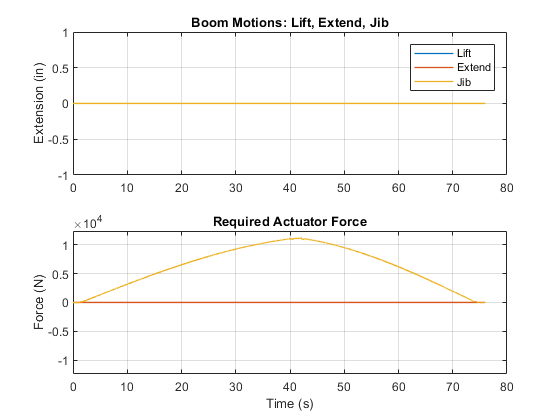
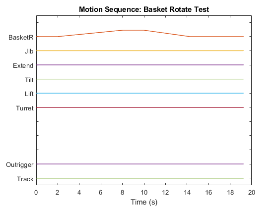
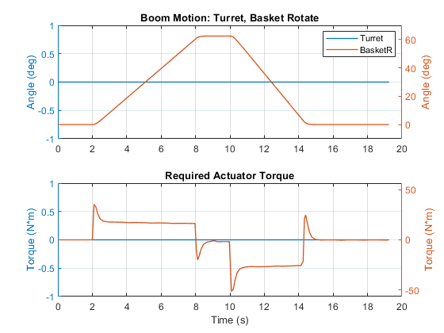

Basket with Ideal Actuation (Test Harness)
This example shows the basket portion of a boom lift with ideal actuation. The mechanism can raise and orient the basket relative to the boom. The model is used to identify requirements for the actuators.
This model is a test harness from the main model (see documentation)
Contents
Model
Component Under Test
The component under test is the mechanism for lifting and rotating the basket of a boom lift.
The jib is a four-bar linkage that can raised or lowered for fine positioning of the jib.
A rotational actuator allows the basket to rotate about the end of the boom.

Simulation Results: Jib Sequence
The plot below shows a test sequence designed to extend the jib. Motions of all joints are specified so that this sequence can be used on a full model of the boom lift that uses prescribed motion for any combination of the actuators.
Motion of the lift, extend, and jib actuators along with applied actuator force.
Simulation Results: Tilt Sequence
The plot below shows a test sequence designed to tilt the boom. The extension of the slave cylinder is controlled by a master cylinder (not modeled) to keep the basket level. Motions of all joints are specified so that this sequence can be used on a full model of the boom lift that uses prescribed motion for any combination of the actuators.
Motion of the lift, extend, and jib actuators along with applied actuator force.
Simulation Results: Rotate Sequence
The plot below shows a test sequence designed to rotate the basket. Motions of all joints are specified so that this sequence can be used on a full model of the boom lift that uses prescribed motion for any combination of the actuators.
Motion of actuators along with applied actuator force.
